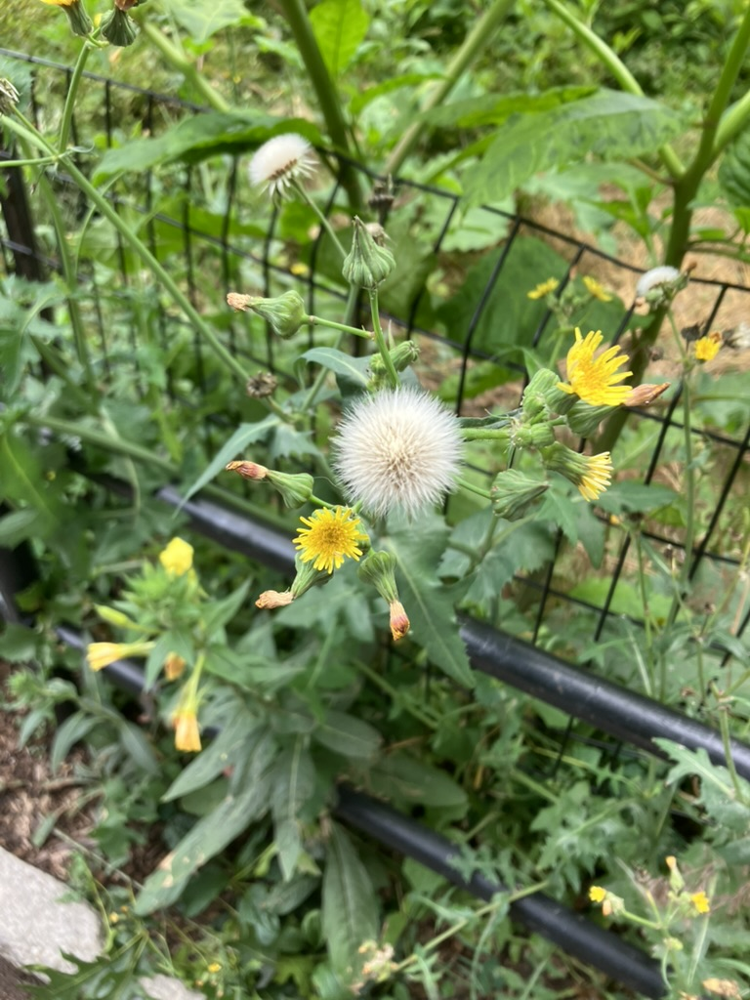

Consulting
Name what you feel so we can sense the relations.
Tell me how you relate to your body and the world around you. Use your words in your code — it’s for you.
Two steps
-
The Pluriverse Journal
A space to define how you relate to your body in your world. The more your words mean to you, the better.
-
The Color Plotter
Your lossy data enters a new field of relation based on aphorisms and axioms mapped onto color. I read your journal for perspective, form, mood, and motion: never for a diagnosis or grade. I attend to your words, represent them as color axioms, and return them to you.
This method of problem solving is not clinical.
Clinical science often measures the people it claims to help into labels, and the labels prescribe deficit stories without nuance.
“Rather than imposing academic or clinical definitions, researchers must embrace participants’ chosen terminologies.”— Santinele Martino et al. 2025, p. 34
“What was also clear was that dis/ability labels did not protect the girls from the pedagogy of pathologization or the destruction in their communities and schools, and in some cases, those labels contributed to the creation of criminalizing difference.”— Annamma 2018, The Pedagogy of Pathologization, p. 47
Consultation tiers
These prices indicate the time and work put into the analyses and tools. If they are not accessible for you, still reach out to negotiate a price and describe your situation.

$125 / session
Designed for people with high sensitivity.
- Initial Pluriverse Journal prompt review
- Your exported local JSON trajectory file
- Full 60-minute interactive workflow session
- Live navigation of the Color Plotter map
$250 / session
Designed for people who have a specific goal in mind.
- Initial Pluriverse Journal prompt review
- Your exported local JSON trajectory file
- Full 90-minute detailed assessment mapping
- Deep-dive analysis of your 3 custom 15-color trajectories
$380 / session
Designed for people who have a digital system.
- Initial Pluriverse Journal prompt review
- Your exported local JSON trajectory file
- Full 90-minute strategic consultation
- Advanced alignment analysis (10 custom Mind, Body, Speech pathways)
- Integration strategy for your own tools or API design projects
- Somatic tool matching & rest-ratio calibration
- Contributes directly to funding Tier 1 community scholarships
Custom tools can be negotiated per engagement based on scope and aim.
“My consultation with Danielle was extremely eye opening. I have never engaged with this kind of self-assessment before, and the approach she offers is mentally, energetically and emotionally expansive. There were personal challenges that I addressed in her intake form that, through our session together, she offered entirely new perspectives and ways of taking action to navigate through those stuck points. I will be sitting with her assessment, somatic tools, and intuitive guidance for a long time to come, as I know it will continue to reveal its relevance and wisdom layer by layer. This is such a fascinating and valuable offering that virtually anyone can benefit from!”— Hollis Maloney
Meet me outside what is expected and accepted. Let’s make new rules from, and for, where we stand.
Find me on socials to learn more about my practice.